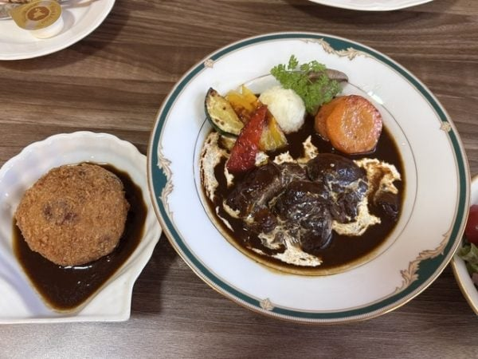

OUR KITCHEN
お店について
懐かしくて、少し特別な洋食を。

手間を惜しまず、
ひと皿ずつ丁寧に。
ゆっくり煮込むシチュー、香ばしく揚げるフライ、ふんわり仕上げるオムライス。小さな厨房だからこそ、目の届く範囲で一つひとつ手作りしています。
住宅街の静かな丘にある12席のお店です。ジャズとともに、ゆっくりとお食事をお楽しみください。
2026年4月12日、北九州市八幡西区紅梅にオープン。
OUR KITCHEN
懐かしくて、少し特別な洋食を。

ゆっくり煮込むシチュー、香ばしく揚げるフライ、ふんわり仕上げるオムライス。小さな厨房だからこそ、目の届く範囲で一つひとつ手作りしています。
住宅街の静かな丘にある12席のお店です。ジャズとともに、ゆっくりとお食事をお楽しみください。
2026年4月12日、北九州市八幡西区紅梅にオープン。